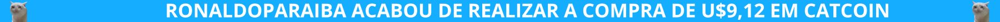
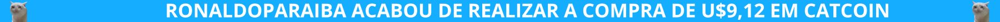

.jpg) 

CatCoin é uma criptomoeda baseada no humor e na popularidade dos memes de gatos na internet. Junte-se a nós e participe da comunidade mais fofa e engraçada do mundo das criptomoedas!
"Esse seria o Gato Moedas, que ficou conhecido por todos como CatCoin... Token que de inicio não passaria de uma piada e no fim tomou um proporção gigantesca, ultrapassando o valor de U$1.900,00 Uma moeda que tranformou vidas, de inicio nao contavamos com uma repercursao tao grande."
Sobre CatCoin
Em um mundo onde surgem novas criptomoedas todos os dias, a comunidade online "CatLovers" se destacou com memes de gatos. Johann, um programador talentoso, teve a ideia de criar a CatCoin, uma criptomoeda inspirada em gatos, para unir a comunidade e arrecadar fundos para ajudar gatos abandonados. Com a ajuda de seu amigo Vanderlei, um designer gráfico, eles lançaram a moeda com um logotipo adorável de um gato sorridente. O lançamento da CatCoin foi um sucesso imediato na comunidade CatLovers, com um evento online distribuindo moedas gratuitamente. A notícia se espalhou rapidamente, atraindo a atenção de blogs de tecnologia e até de celebridades como Taylor Swift e Ian Somerhalder, aumentando ainda mais sua popularidade. Para cada transação, 10% dos valores eram doados para abrigos e resgates de animais, o que fortaleceu a imagem positiva da CatCoin. Em menos de um ano, a CatCoin viu seu valor disparar, ultrapassando U$1.900,00, transformando Johann e Vanderlei em lendas do mundo das criptomoedas..